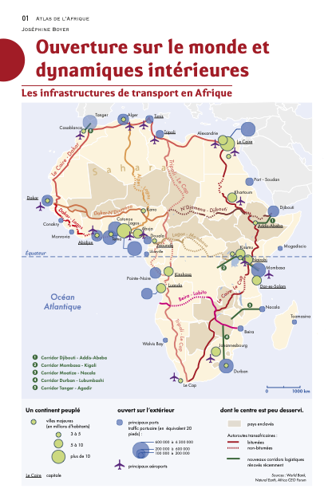
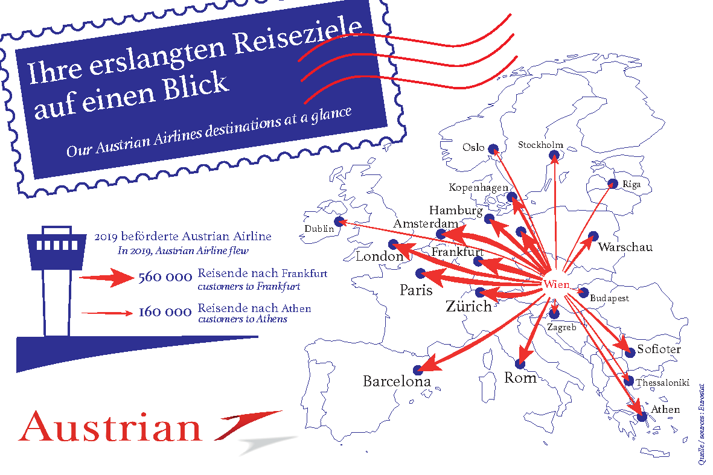
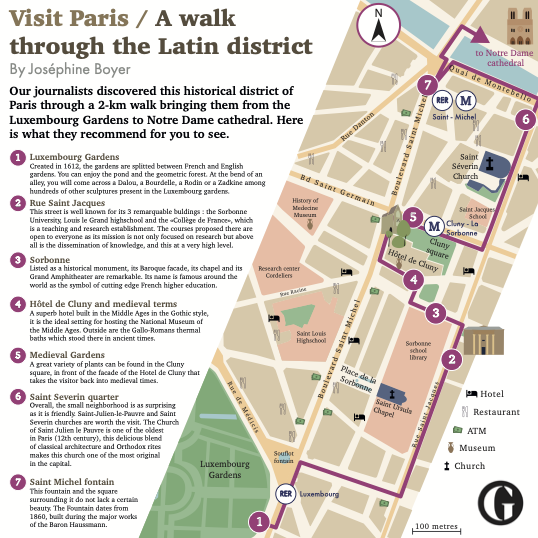
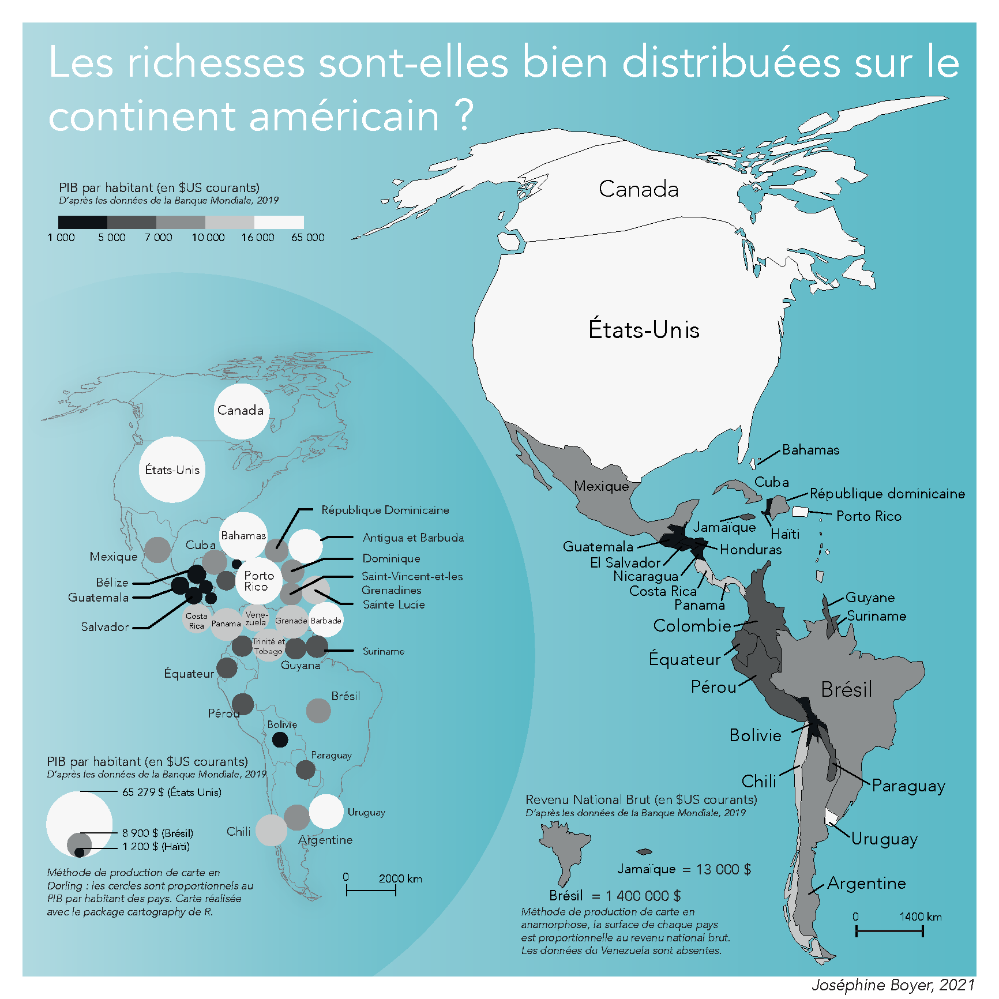
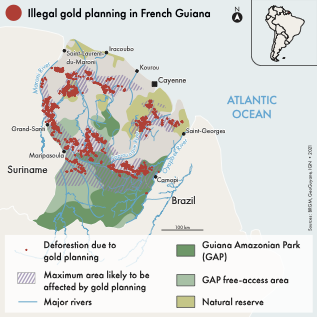

Carte de synthèse

Réalisation d'une carte de synthèse qui représente les infrastructures de transports en Afrique. La charte graphique à respecter est celle des atlas de la maison d'édition Autrement.
Carte de flux

Publicité pour une compagnie aérienne sous la forme d'une carte de flux.
Cartographie touristique

Cartographie touristique du Boulevard Saint Michel pour le journal The guardian
Anamorphose

Le but de cet exercise était de réaliser une carte d'anamorphose en noir et blanc, pour montrer les inégalités présentes sur le continent américain.
Projet éditorial (1)

Cette carte et la suivante ont été réalisées lors d'un projet de groupe, qui visait à créer un magasine cartographique en anglais. J'ai donc dû respecter une charte graphqiue scrupuleusement.
Projet éditorial (2)